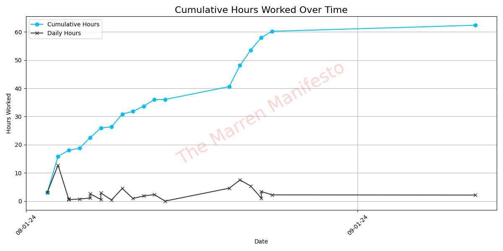

A Heuristic Blog for Navigating Self-Development
Self-development starts with self-awareness.
That's why you're reading my written word - it's how I best communicate.
This blog delves into my journey to construct a beautiful life through meaningful, introspective work. I have a passion for developing software, but that's not my be-all and end-all. Putting that passion to work for my dreams, is.
Feel free to check out my latest posts here. They're meant to provide everyone who's anyone guidance, inspiration, and maybe even insight into their own journeys
My Software Development Progress
41/10,000 hours (0.41%)
